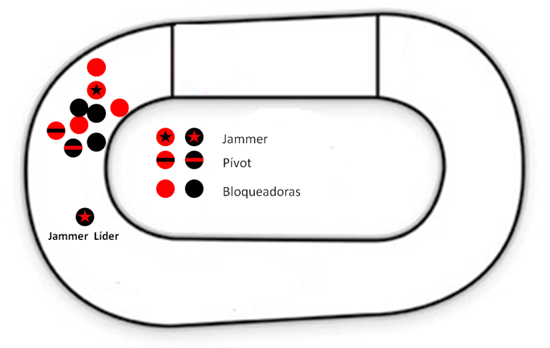
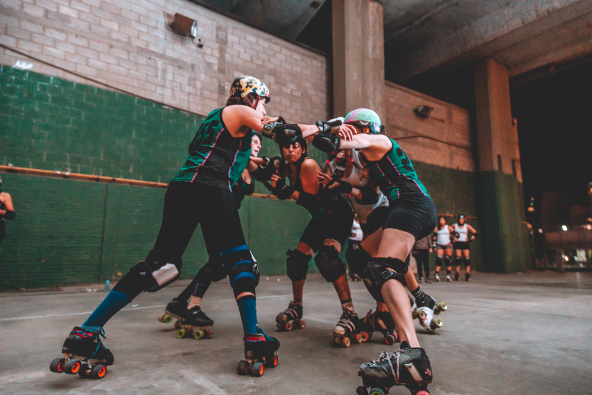

El Roller Derby es un deporte de contacto al que se juega con patines de dos ejes sobre una pista oval. Se patina siempre en el sentido contrario a las agujas del reloj.
Cada partido o Bout de Roller Derby consta de dos tiempos de 30 minutos que se dividen en carreras de hasta 2 minutos llamadas JAM.
Hay dos equipos formados por 5 jugadoras en pista cada uno.
El grupo de 8 jugadoras en cabeza se llama Pack. El pack está formado por 4 bloqueadoras de cada equipo. A la cabeza del pack se suelen situar los Pívot de cada equipo, que se distinguen de las demás bloqueadoras por llevar una cubierta de casco con una raya. Las pívot suelen encargarse de organizar el pack y la estrategia de su equipo. Las bloqueadoras obstaculizan a la jammer rival y ayudan a la suya a adelantar al pack.
Las jammers son las corredoras de cada equipo y se sitúan detrás de la línea de jammer. Llevan una cubierta de casco con una estrella a cada lado y son las únicas jugadoras que pueden marcar puntos.
Un árbitro vigila a cada Jammer y lleva la cuenta de los puntos que va haciendo, y hay otros árbitros que controlan el pack, patinando tanto por fuera como por la parte interior del óvalo de la pista, un partido puede tener hasta 7 árbitros en patines.
A la señal de un pitido de silbato comienza el jam y tanto el pack como las jammers comienzan a rodar.
La jammer que pasa primero limpiamente a todas las bloqueadoras rivales en la primera vuelta es denominada jammer líder, el árbitro que la sigue la señalará con dos pitidos. En los siguientes pasos a través del pack, las jammers anotan un punto por cada bloqueadora contraria que adelantan legalmente.
La jammer líder puede terminar el jam antes de los dos minutos tocando repetidamente sus caderas.